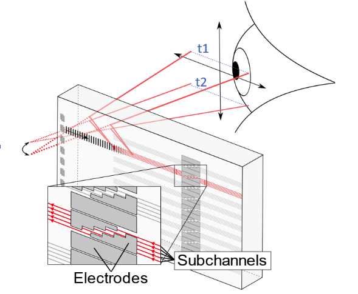

AO & EO Deflectors
Intro
I did full time undergraduate research on Electroholography at BYU for a proof of concept on a novel method of AR headset displays.
Picture on the right shows the device that we were testing after it had been fabricated in the clean room and wire bonded.
 SummaryI helped design and build a device that utilized Lithium Niobate chips to create waveguides for light to pass through and then be deflectoed by AO (Acousto-optic) modulators, and EO (Electro-optic modulators). This novel design in light manipulation was a successful proof of concept for analog method of creating light displays. Possible applications of this are future AR headsets.
In order to do research here I was trained in clean room photo-lithography device fabrication, wirebonding, the basics of optics, optical testing and set up, and device testing.
I specifcally built a new testing rig that allowed for us to automate mode detection to make testing newly fabricated devices simpler. Prior to my work here there was a very meticulous process of optical alighnemnt and eyeballing mode detection. I constructed and designed a new rig that would automate the mode detection to create increase testing speed of new prototypes and allow us to do research more quickly.
Picture on the left show the device being tested under a microscope.
Picture on the right shows the testing entire testing rig.
Future Iterations/Improvements
Future iterations of this project would include a better UI and easier integration for other researchers to use the device without too much training. It would also include a more relaible centering technique.
Publication: "Hybrid AO/EO leaky-mode deflectors"